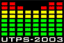

|
  |
 |
1. II Tukuma modes festivāla atklāšana. Aina no operas "RIEKSTKODIS" - solists: Intars Kleinhofs, LNO baleta trupas solists; "Aldara" gada balvas baleta mākslā 2002 ieguvējs.
Modernās dejas izrāde.
"PLAY GROUND" - Iestudējums tapis improvizācijas rezultātā, kurā par pamatu tika izmantoti emocionālie apziņas stāvokļi. Horeogrāfs Bettina Holzhausen (Šveice) ir ieguvusi izglītību baleta un mūsdienu dejā Cīrihē, Londonā, Berlīnē, Parīzē un Ņujorkā. 1992. gadā nodibinājusi savu kompāniju, ar kuru veidotas vairākas pilna vakara izrādes, kā arī īsas horeogrāfijas un video dejas. 1998. Gadā pirmo reizi ieradās Rīgā, lai pasniegtu atklātās klases. Ar Latvijas Kultūras akadēmijas studentiem strādājusi vairākkārt pasniedzot gan modernās dejas tehniku, gan improvizāciju un kompozīciju.
"MAN WANTED" - izrādi iestudējuasi Latvijas Kultūras akadēmijas (LKA) docente Olga Žitluhina. Abas izrādes dejos modernās dejas dejotāji: Latvijas Kultūtras akadēmijas absolventi, viesmākslinieki; horeogrāfi. Atklāšanas ietvaros ar sevi iepazīstinās arī visi jauni modes mākslinieki, kas savus tērpus demonstrēs nākamajā dienā un cīnīsies par augstāko festivāla atzinību. Kā arī uzstāsies kāds tā brīža populārs mūziķis.
2. II Tukuma modes festivāla "before party"
Pasākuma ietvaros notiek konkurss "Tērpu meistars 2003". Šī pasākuma dalībnieki ir paši tukumnieki, kuri cīnīsies konkursā par tērpu dizainera titulu, prezentējot savu - speciāli šūdinātu tērpu.
3. Jauno mode mākslinieku parāde "Vīle 2003"
Piedalīties tiek aicināti jaunie un topošie Latvijas modes mākslinieki. Kopā tiks piesaistīti 15 jaunie talanti, kam būs iespēja sevi prezentēt un popularizēt plašai auditorijai divu dienu garumā. Dalībnieku sniegums tiks arī vērtēts nosakot vienu - visprogresīvāko un talantīgāko. Katram māksliniekam būs divas tērpu līnijas par tēmu "Mūsdienu Saule" un "Nākotnes Saullēkts" un tās tiks demonstrētas vienu reizi iekļaujoties laikā līdz 5 minūtēm!
4. II Tukuma modes festivāla noslēgums
Festivāla grandiozākais notikums, kur pēc oficiālās daļas (apbalvošana) - kulminācijā ir horeogrāfisks iestudējums pusotras stundas garumā. Tajā ņems dalību 82 dejotāji un 60 modeļi, kuri būs tērpti Latvijas ietekmīgāko tērpu dizaineru (Ž. Auziņa, Dāvids, Šeila) apģērbos un aksesuāros. Iestudējums ir oriģināls un tas tiek gatavots tieši šim pasākumam un nekur citur vairs netiks atkārtots. Pasākumu režisēs 5 horeogrāfu komanda (Latvijas Kultūras akadēmijas pasniedzēji un absolventi), kā dejotāji piedalīsies profesionāļi no Latvijas un viesmākslinieki no ārzemēm (Francija, Japāna, u.c.). Iestudējuma tēma ir Matriarhāta un Patriarhāta attiecības un izpausmes laika griežos, to atspoguļojot dejā, kustībā, skaņā, ar tērpiem un gaismas projekcijām.
Pasākumi pilsētas ielās:
5. Breika platforma
6. Modes un stila platforma
7. Modernās dejas platforma
ŠEIT TU VARI PIETEIKTIES UN PIEDALĪTIES!!!
| © 2003 Tukuma Modes Festivāls | Veidoja Normunds |
 |
 |